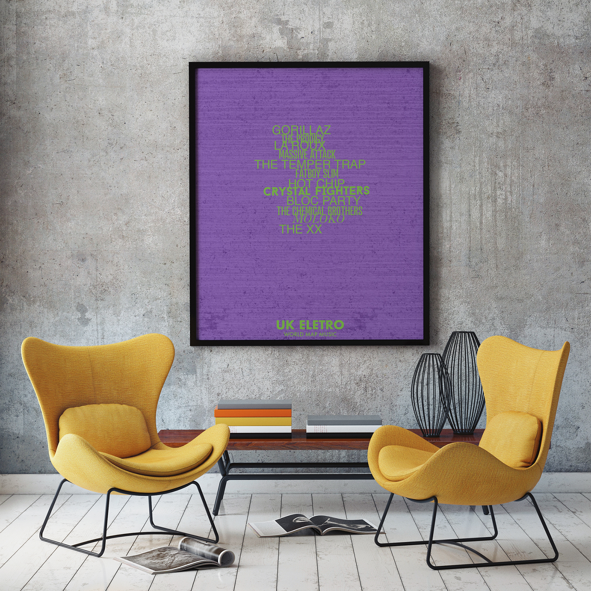

UK ROCKMusic Mapping
Rock music is a broad genre of popular music that originated as "rock and roll" in the United States in the early 1950s, and developed into a range of different styles in the 1960s and later, particularly in the United Kingdom and in the United States. It has its roots in 1940s and 1950s rock and roll, a style which drew heavily on the African-American genres of blues and rhythm and blues, and from country music. Rock music also drew strongly on a number of other genres such as electric blues and folk, and incorporated influences from jazz, classical and other musical styles. Musically, rock has centered on the electric guitar, usually as part of a rock group with electric bass and drums and one or more singers. Typically, rock is song-based music usually with a 4/4 time signature using a verse–chorus form, but the genre has become extremely diverse. Like pop music, lyrics often stress romantic love but also address a wide variety of other themes that are frequently social or political.
UK POPMusic Mapping
Pop music is a genre of popular music that originated in its modern form in the United States and United Kingdom during the mid-1950s.[4] The terms "popular music" and "pop music" are often used interchangeably, although the former describes all music that is popular and includes many different styles. "Pop" and "rock" were roughly synonymous terms until the late 1960s, when they became increasingly differentiated from each other. Although much of the music that appears on record charts is seen as pop music, the genre is distinguished from chart music. Pop music is eclectic, and often borrows elements from other styles such as urban, dance, rock, Latin, and country; nonetheless, there are core elements that define pop music. Identifying factors include generally short to medium-length songs written in a basic format (often the verse-chorus structure), as well as common use of repeated choruses, melodic tunes, and hooks.

UK INDIEMusic Mapping
Indie music is music produced independently from major commercial record labels or their subsidiaries, a process that may include an autonomous, do-it-yourself approach to recording and publishing. The term indie is sometimes also used to describe a genre (such as indie rock and indie pop); as a genre term, "indie" may include music that is not independently produced, and most independent music artists do not fall into a single, defined musical style or genre, and usually create music that can be categorized into other genres.

UK ELECTROMusic Mapping

Electronic music is music that employs electronic musical instruments, digital instruments and circuitry-based music technology. In general, a distinction can be made between sound produced using electromechanical means (electroacoustic music), and that produced using electronics only.[1] Electromechanical instruments include mechanical elements, such as strings, hammers, and so on, and electric elements, such as magnetic pickups, power amplifiers and loudspeakers. Examples of electromechanical sound producing devices include the telharmonium, Hammond organ, and the electric guitar, which are typically made loud enough for performers and audiences to hear with an instrument amplifier and speaker cabinet. Pure electronic instruments do not have vibrating strings, hammers, or other sound-producing mechanisms. Devices such as the theremin, synthesizer, and computer can produce electronic sounds.
